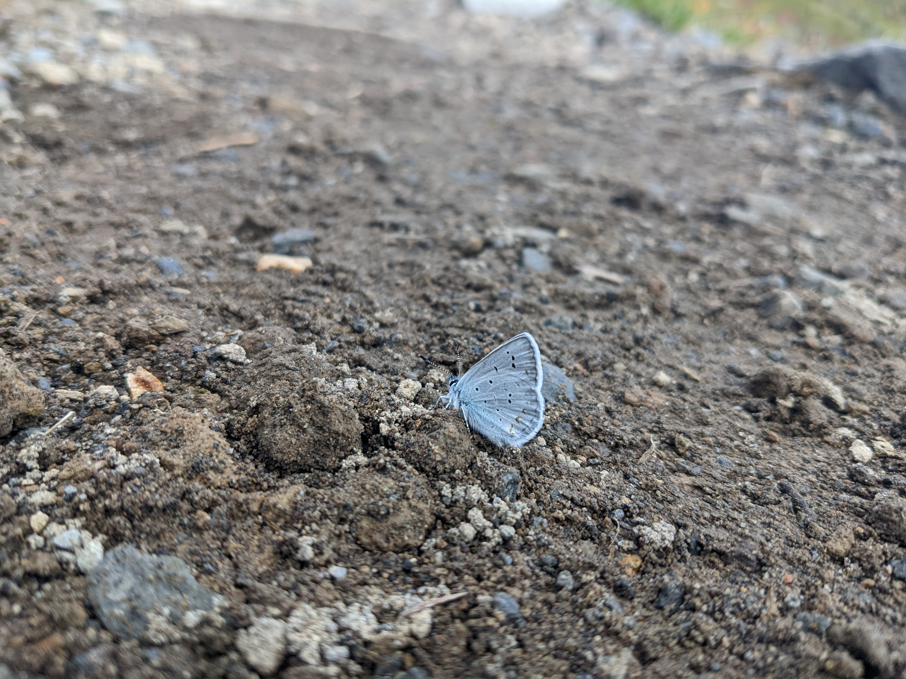
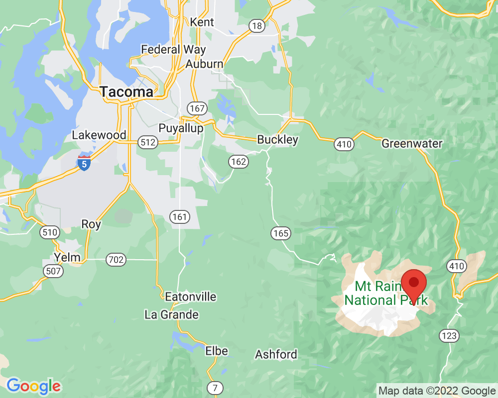
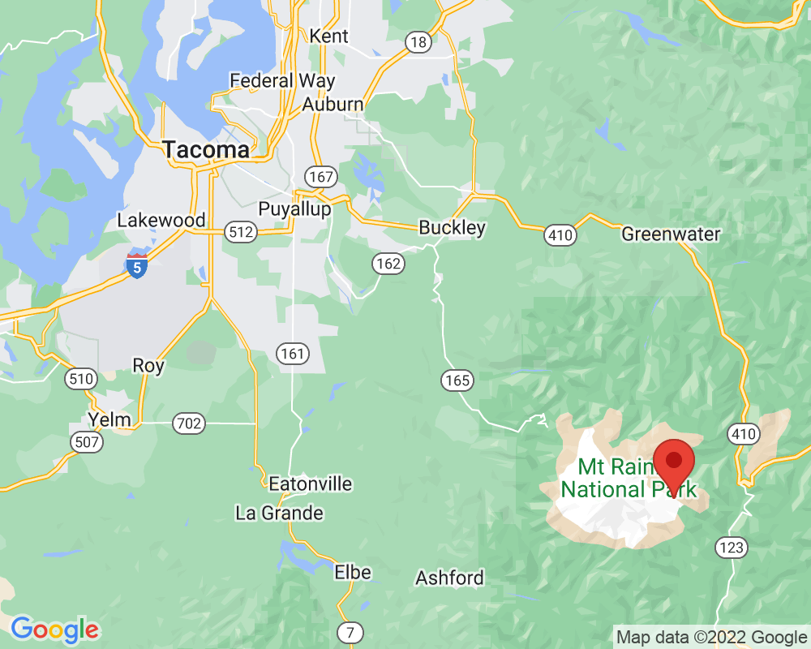

Butterfly
This is a blue butterfly resting on the trail.
Visited: September 23, 2022 at 1:20 PM
Location: White River Entrance/Panhandle Gap
This is a blue butterfly resting on the trail.
Visited: September 23, 2022 at 1:20 PM
Location: White River Entrance/Panhandle Gap
